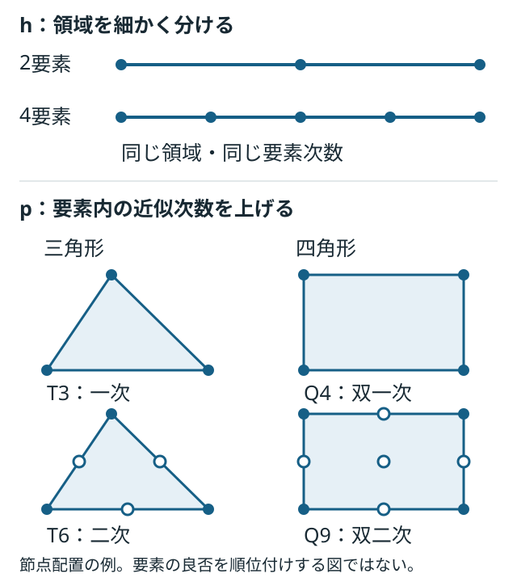

静解析
K q = F
荷重に対する変位・回転を求めます。根元の変位と回転を0に拘束します。
MECHANICAL DESIGN STUDY · LESSON 03
有限要素法で、何を近似し、何を確かめるか。
梁要素で組み立て・拘束・振動を学び、2次元連続体で要素形状と次数を比較します。数値の一致と、モデルの適用性を分けて判断します。
AI支援の学習資料。M2aの梁FEMを実装済みで、M2bは計画段階です。図は本プロジェクトの概念図です。
01 / 近似の選択

比較する部品形状・材料・荷重・境界条件はそろえます。要素数だけでなく、自由度数と誤差を記録します。
02 / 最初の要素
最初はEuler–Bernoulli梁のHermite要素を使います。1節点に横変位 w と回転 θ を持ち、1要素は4自由度です。
qₑ = [w₁, θ₁, w₂, θ₂]ᵀ wʰ(x) = N(x) qₑ
変位と傾きの接続条件を満たす三次補間を使います。「2節点＝一次要素」とは限りません。各要素の剛性・質量行列を共有する自由度へ組み立てます。
K q = F
荷重に対する変位・回転を求めます。根元の変位と回転を0に拘束します。
K φ = ω² M φ f = ω / (2π)
整合質量行列を基準にし、固有振動数とモードを求めます。静的な先端力を付加質量には変換しません。
03 / 検証の題材
一様な梁・先端荷重・完全固定という現在の条件では、静的なたわみの解析解は三次式です。
w(x) = F x²(3L − x) / (6EI)
三次Hermite要素で表せるため、正しく組み立てて積分すれば、1要素でも丸め誤差の範囲で再現できます。これは式から導く性質で、今回の実測結果ではありません。
静的なたわみの一致だけでは、細分化の効果を確認できません。
静解析は式・拘束・反力の照合に使い、固有振動数でメッシュ収束を調べます。
解析解に対する誤差と、分割を倍にしたときの変化を両方見ます。
eₙ = |fₙ − f_ref| / |f_ref|
dₙ = |f₂ₙ − fₙ| / |f₂ₙ|
鋭い角や点荷重位置の応力が増え続ける場合は、特異点の可能性を考えます。評価点を固定した物理座標で定め、最大値だけで収束を判断しません。COMSOL：特異点の解説
04 / 段階的な検証
| 段階 | 変えるもの | 確認するもの |
|---|---|---|
| M2a：梁 | 要素数 1 → 2 → 4 → 8 → 16 | 静的解・反力・一次固有振動数・モード・残差 |
| M2b：2次元 | T3/T6、Q4/Q9を候補に、形状・次数・品質を比較 | 自由度数・誤差・時間・厚み方向の分割・応力評価位置 |
平面応力の連続体と梁理論では、せん断変形や固定端付近の扱いが違います。梁解との差をすべてメッシュ誤差と考えず、同じ連続体モデル内の収束も確認します。
M2aでは、静的解と反力の相対誤差1e-8以下を初期目標とします。振動は16要素で解析解との誤差0.1%以下、8→16要素での変化0.1%以下を目標に全分割の値を保存します。これらは教育用の検証基準です。
統合側には節点座標・接続・要素種類・次数・積分法・質量方式・拘束自由度・ソルバー設定・誤差・失敗理由を保存します。
05 / 最初の確認
変位だけを未知場とする標準的なEuler–Bernoulli梁では、曲率は変位の二階微分に対応します。
κ ≈ d²w/dx² M = EIκ
要素内の変位を w(x) = a + bx という直線だけで表すと、要素内部の曲率はどうなるでしょうか。曲げを表すうえで何が不足するでしょうか。
各問でいったん考え、解答例と解説を開いて確認する。対話で扱った論点を汎用の教材として再構成したもので、個人の回答・成績・実行記録ではない。解答例を読んだことと、自分で説明・実行できたことは別に確認する。
問い：変位だけを未知場とするEuler–Bernoulli梁で、w=a+bxとすると曲率はどうなるか。
解答例：要素内部の曲率は0となり、M=EIκも0になる。
解説：二階微分が0なので、曲げ変形を表せない。単に曲げモーメントを計算できないというより、近似空間に曲率を表す能力がない。標準的な適合梁要素では、変位と傾きを節点に持つ三次Hermite補間を使う。
問い：2要素・3節点の片持ち梁で、根元を完全固定すると未知の自由度はいくつか。
解答例：要素結合部の変位・回転と、先端の変位・回転の4自由度。
解説：全6自由度のうち根元の2自由度を拘束する。縮約した剛性行列は4×4、未知ベクトルは4×1となる。拘束前後の添字対応を保持する。
問い：隣接要素の端を同じ座標に置けば、節点IDや自由度を共有しなくてもつながるか。
解答例：つながらない。接続や拘束式を明示する必要がある。
解説：重複節点を未接続のまま組み立てても、行列とベクトルのサイズは一致し得る。問題は行列サイズの不一致ではなく、非接続部分に剛体モードが残り、剛性行列が特異になり得ること。節点座標と接続情報を別々に検査する。
問い：結合部で変位だけを共有し、回転を独立にしたら何を表すか。
解答例：曲げモーメントを伝達しない理想ヒンジ。
解説：回転ばねなどがない場合を考える。片持ち梁の途中にヒンジを入れ、右側を他で支持しないと、右側がヒンジまわりに回転できる機構になり得る。意図したヒンジと、誤った自由度の切断を区別する。
問い：2要素梁の自由度順が[w₁,θ₁,w₂,θ₂]で、先端に横荷重Fだけを加えると荷重ベクトルは何か。
解答例：[0, 0, F, 0]ᵀ。
解説：先端変位と共役な成分に力Fを入れ、先端モーメントは0。力とモーメントは異なる単位を持ち、同じ数値だからと添字を交換してはいけない。
問い：長さLの片持ち梁に正方向の先端力Fが作用すると、根元反力と反力モーメントは何か。
解答例：外力モーメントFLを正とする符号規約では、−Fと−FL。
解説：先端に集中モーメントを与えていなくても、荷重には腕の長さLがある。F=1 N、L=0.1 mなら−1 N、−0.1 N·m。反力は拘束自由度でKq−fから回収し、全体の力・モーメントの釣合いと照合する。
問い：形状と剛性を固定して密度を2倍にすると、固有振動数は何倍か。
解答例：1/√2倍。
解説：Kφ=ω²MφでMだけが2倍なら、ω²は1/2倍。√2倍ではなく、その逆数となる。付加質量など一部の質量を固定したままの場合は、全質量行列が2倍にならず単純な倍率は使えない。
問い：形状と密度を固定してEを2倍にすると、固有振動数は何倍か。
解答例：√2倍。
解説：線形モデルでKだけが2倍になるため。材料剛性以外の支持ばねがあるときなど、全剛性行列が同じ倍率で変わるかを確かめる。
問い：三次Hermite梁の1要素で静的先端たわみが一致したら、振動も十分正確か。
解答例：そうとは限らない。
解説：一定EI・完全固定・先端集中力の静的変位解が三次式なので、この条件では補間空間が解を含む。数値上は丸め誤差を伴う。振動モードは一般に三次式でなく、特に高次モードは細分化が必要。モード形状は部品の幾何形状ではなく、振動時の変形パターン。
問い：保存された収束表で、解析解誤差0.1%以下だけを条件とすると、必要な最小要素数は何か。
解答例：第1モードだけなら2要素、第1〜3モードすべてなら8要素。
解説：2要素の第1モード誤差は0.0483%。8要素の第1〜3モードの最大誤差は第3モードの0.0608%。今回の5段階の表に限る選択であり、実装の合格条件には最細16要素以上や分割間変化などもある。
問い：8→16要素の周波数変化が0.057%なら、実物に対する誤差も0.1%以下と断定できるか。
解答例：できない。数値収束と実物に対する妥当性は別。
解説：線形固有値解析で局所解に落ち着くという説明より、設定したモデルへ収束しても、その支持・質量・物性が実物と違う可能性があると考える。一段階の小さな変化だけでは数値収束の確認も十分とは限らない。ここで0.057%は説明用の丸め値。
問い：根元の完全固定が実物と違う場合、何を変更・確認するか。
解答例：根元を弾性結合に置き換えるなど、支持モデルを見直す。
解説：並進ばねk_y [N/m]、回転ばねk_θ [N·m/rad]が簡単な例。対象自由度を未知量として残し、接地ばねなら対応する剛性成分を加える。ばね値には試験や接合部解析の根拠が必要。これは拡張の説明で、現在のM2aは完全固定のみ。
問い：根元並進を固定し、回転ばねk_θで支持すると、先端力Fによる追加たわみはいくらか。
解答例：微小回転ではFL²/k_θ。
解説：FL/k_θはたわみではなく根元の回転角θ₀。先端変位にはさらに腕の長さLを掛ける。梁自体の曲げと合わせると下式となり、k_θ→∞で完全固定へ戻る。正の荷重に対する大きさで記す。
θ₀ = FL/k_θ； δ_tip = FL³/(3EI) + Lθ₀ = FL³/(3EI) + FL²/k_θ
問い：T3でu=a₁+a₂x+a₃y、v=b₁+b₂x+b₃yと近似すると、ひずみは位置によって変わるか。
解答例：要素内では一定になる。
解説：微小ひずみを考える。T3は定ひずみ三角形要素と呼ばれ、各節点はu,vの2自由度、1要素では6自由度。一様な線形弾性材料で初期ひずみ等がなければ、応力も要素内で一定となる。
ε_x = a₂； ε_y = b₃； γ_xy = a₃ + b₂
問い：曲げの深さ方向全体を覆う1つのT3で、圧縮→0→引張のひずみ分布を表せるか。
解答例：表せない。
解説：曲げのε_x=−yκはyに沿って変わるが、T3のひずみは一定。深さ方向へh細分化して段階的に近似するか、高次要素を使う。ここでyは2Dモデル内の曲げ深さ方向で、平面応力モデルの面外厚さとは区別する。
問い：直線辺のT6で変位を二次式にすると、ひずみは何次式になり、純曲げを表せるか。
解答例：一次式になる。一定曲率の純曲げに必要な一次のひずみ分布を表せる。
解説：頂点と辺中点に6節点を置く。曲がった辺や非線形な幾何写像では、物理座標で単純な二次式とみなせるとは限らない。純曲げの再現には、他のひずみ成分・境界条件・積分も整合させる。
u = a₁+a₂x+a₃y+a₄x²+a₅xy+a₆y² → ε_x = a₂+2a₄x+a₅y
問い：T6なら、先端集中力による片持ち梁のひずみ分布も1要素で厳密に表せるか。
解答例：一般には表せない。
解説：梁理論ではκ(x)=F(L−x)/(EI)なのでε_x=−F(L−x)y/(EI)にxy項が現れる。直線辺T6のひずみは一次式であり、この二次項を含められない。高次化しても対象の分布に応じた細分化が必要。
問い：T3/T6で要素数だけそろえれば、次数の効果と計算負荷を公平に比較できるか。
解答例：不十分。形状・配置をそろえ、全体の自由度数も記録する。
解説：同じ三角形分割に中間節点を足す比較は、次数の効果を見る。一方、同程度の未知数での精度を見るなら全体の自由度数を近づける。T3は要素あたり6、T6は12自由度だが、全体では共有節点を重複せず、拘束後の自由度を数える。実行時間はソルバーや実装にも依存する。
問い：同程度の全体自由度数なら、粗いT6は細かいT3より必ず高精度か。
解答例：必ずとは言えない。
解説：滑らかな曲げではT6が有利になりやすいが、局所的な急変を粗い要素で捉えきれない場合がある。変化する場所への自由度配置や要素品質が効く。先端たわみと局所応力でも優劣が変わるので、指標を先に定める。
問い：切欠き付近の応力を詳しく知りたいとき、どこを細かくするか。
解答例：切欠き周辺、特に応力勾配が大きい底の近く。
解説：全体を一様に細分化するだけでなく、局所細分化を行う。周囲へのサイズ変化も緩やかにし、有限の丸みを持つ幾何形状が十分に表現されているかを確認する。
問い：実物の切欠き底には丸みがあるのに、モデルを鋭い入り隅にして最大応力が増え続けたら何を直すか。
解答例：まずモデル形状を修正し、実物や図面に対応した半径Rを与える。
解説：理想的な入り隅では応力特異点が生じ得る。細分化だけで有限の最大応力へ収束するとは限らない。丸みを入れた後もメッシュ収束を確認し、比較では同じRと評価位置を用いる。すべての鋭い角が同じ特異性を持つわけではない。
問い：長方形Q4でu=a₁+a₂x+a₃y+a₄xyとすると、ε_xは深さ方向yに変化できるか。
解答例：変化できる。ε_x=a₂+a₄yとなる。
解説：Q4は双一次補間で、xy項がある。ただし軸方向ひずみを表せるだけで、純曲げ全体の再現は保証されない。一般のゆがんだ四角形では、自然座標での双一次補間と物理座標での式を区別する。
問い：u=−κxyによる純曲げでせん断ひずみをゼロにするには、vに必要なx²項をQ4で表せるか。
解答例：表せない。
解説：γ_xy=−κx+∂v/∂x=0にはv=κx²/2+g(y)が必要。Q4のv=b₁+b₂x+b₃y+b₄xyにはx²項がない。したがって軸方向曲げひずみとゼロせん断を同時に厳密には表せない。これは長方形・一定曲率での説明。
問い：完全積分Q4で余分なせん断ひずみが生じると、同じ荷重によるたわみはどう出るか。
解答例：硬すぎる応答となり、たわみを小さく見積もる場合がある。
解説：余分なせん断エネルギーによる曲げ剛性の過大評価が、せん断ロッキングにつながる。たわみ上限に対して余裕を過大評価し得る。要素名だけでなく定式化と積分法を記録する。
問い：Q4を2×2点から中央1点の低減積分にすれば、必ず良くなるか。
解答例：必ずとは言えない。ロッキングを緩和できても、別の不安定性が生じ得る。
解説：要素剛性はひずみと材料則から積分する。中央点だけでは、中央のひずみがゼロでも他の場所が変形しているパターンを見逃すことがある。標準的な完全積分と、安定化なし1点積分を区別して比較する。
K_e = ∫ BᵀDB dV
問い：1点積分の評価点でひずみがゼロなら、その変形のひずみエネルギーはいくらと計算されるか。
解答例：0と計算される。
解説：実際の要素内で変形があっても、評価点でゼロなら積分が見逃す。剛体移動ではないのに復元力を持たない不要なゼロエネルギーモードがアワーグラスモード。安定化を加える場合も人工的なエネルギーの影響を評価する。
U_e = (1/2)∫ εᵀDε dV
問い：アワーグラスモードが拘束後にも残ると、静解析と振動解析に何が起こるか。
解答例：静解析では剛性行列が特異となり、振動解析では不要な0 Hz付近のモードが現れる。
解説：非ゼロのφに対しKφ=0となる。静解析は一意に解けずZero Pivotなどにつながる。質量行列が正定値ならω=0で、丸め誤差により小さな正・負の固有値となることもある。こうしたモードを黙って除外して正常扱いしない。自由支持モデルの物理的な剛体モードとは区別する。
問い：要素内でdet J=0となった場合、J⁻¹による座標変換とひずみ計算は可能か。
解答例：不可能。逆行列が存在しない。
解説：局所的に要素がつぶれ、座標変換が退化している。ゼロに近い悪条件の変換にも注意する。ただし正常な要素を小さくしてもdet Jの絶対値は小さくなるため、絶対値だけでなく形状・符号・条件数などを確認する。
問い：負のヤコビアンや不要なゼロエネルギーモードが検出された結果を精度ランキングへ入れてよいか。
解答例：入れない。理由付きのerrorとして残し、モデルを修正する。
解説：正の向きを要求する接続規約の下で、節点順序や要素の反転を検査する。正常に解けたが精度不足のケースは誤差とともに比較へ残す。一方、入力→品質・拘束→解の成立性→収束・誤差→設計制約の順で確認し、不成立のモデルを合格に変換しない。